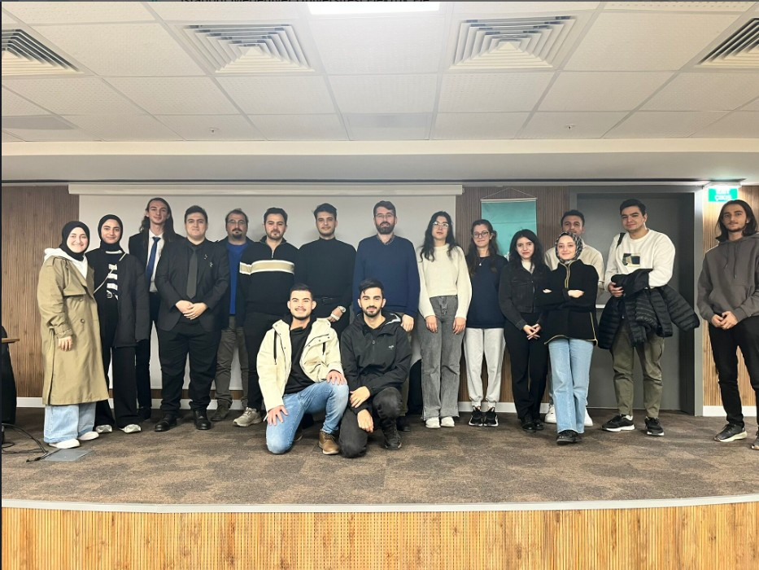
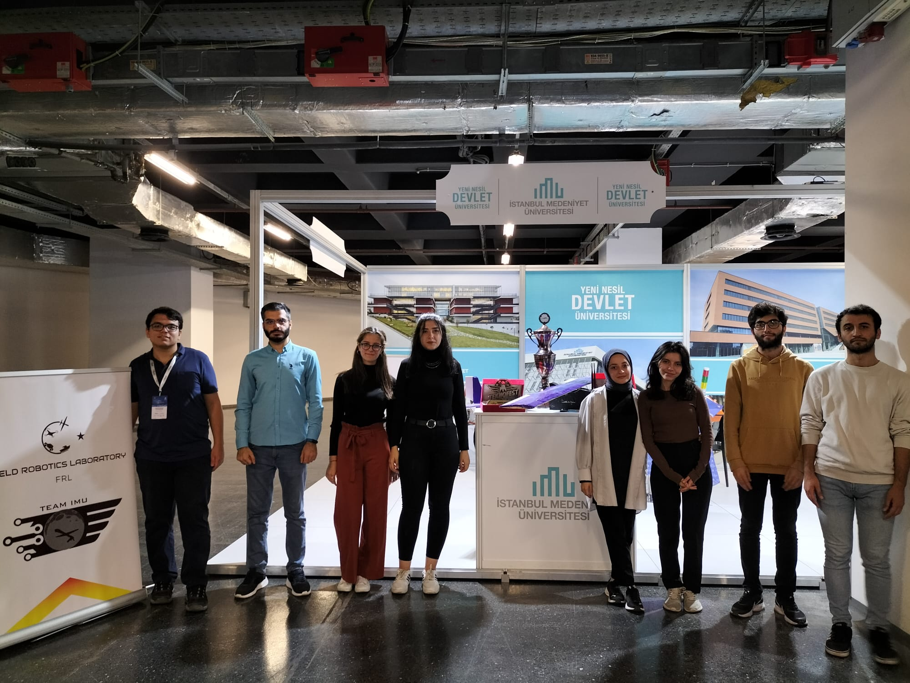

Activities
FRL Pizza Party #2
Members of Field Robotics Laboratory gathered up for the 2nd annual pizza party. We celebrated our collective experience and successes of 2022 and happy to start to a new year with great potential.
EEE Graduate Talks #4: Ahmet Buğra Büyükarslan
Ahmet Buğra Büyükarslan graduated from Istanbul Medeniyet University's Department of Electrical and Electronics Engineering in 2022. During his university years, he excelled as a team leader in the Field Robotics Laboratory (FRL), contributing significantly to various projects involving Fixed Wing Unmanned Aerial Vehicles and Field Robots. Buğra interned at Baykar Technology and continued part-time work there, subsequently launching his professional journey as a full-time software developer. Presently, he works as a software developer at Siemens. We extend our gratitude to Buğra for sharing his valuable insights and inspiring fellow students.

Field Robotics Laboratory Participated in State Incentives Promotion Days
The Field Robotics Laboratory joined the State Incentives Promotion Days, held at the Istanbul Congress Center, alongside numerous institutions and aspiring entrepreneur candidates. This event served as a platform for bringing together young individuals with public institutions. The stands, showcasing various incentives and supports, garnered significant attention from secondary school, high school, and university students. During the promotions at the stands, young attendees were provided with information regarding financial support opportunities such as scholarships, grants, funds, loans, internship programs, and international project support. The Field Robotics Laboratory actively participated in this two-day event.

Orientation Week 2023
During Orientation Week 2023, we had the pleasure of meeting students from our university. We showcased our robots, shared our experiences and sparked considerable interest among attendees. As a result, we received numerous applications for membership to the IMU Robotics club. We're thrilled by the enthusiasm and look forward to welcoming new members to our vibrant community of robotics enthusiasts.
EEE Graduate Talks #3: Murat Kaymaz
Murat Kaymaz graduated from Istanbul Medeniyet University, Department of Electrical and Electronics Engineering in 2020. Throughout his academic journey, he undertook internships in various companies, with a significant stint at Havelsan. Murat began his professional career as a software developer at Akinrobotics. Over the course of two years, he diversified his experience by working on various projects in different companies. Presently, Murat serves as an upper layer software engineer at ULAK Communication. We extend our gratitude to Murat for sharing his valuable insights and inspiring fellow students.
FRL Pizza Party #1
Members of Field Robotics Laboratory gathered up for the 1nd annual pizza party. We celebrated our collective experience and successes of 2022 and happy to start to a new year with great potential.

EEE Graduate Talks #2: Nisanur İlhan
Nisanur İlhan graduated from Istanbul Medeniyet University, Department of Electrical and Electronics Engineering in 2020. During her academic journey, she completed a 4-month internship at Baykar Defense in 2019. Following this, Nisanur gained valuable experience in the Artificial Intelligence and Data Management department of Türkiye İş Bankası in 2020. Subsequently, she focused on addressing perception challenges in autonomous vehicles at Otokar Automotive and Defense Industries. Currently, Nisanur serves as a Data Science and Modeling Engineer at Turkish Aerospace Industries while pursuing her master's degree in Computer Science and Engineering at Sabancı University. We extend our gratitude to Nisanur for sharing his valuable insights and inspiring fellow students.

EEE Graduate Talks #1: Enis Çeri
Enis Çeri graduated from Istanbul Medeniyet University, Department of Electrical and Electronics Engineering, in 2020, achieving the second-highest ranking in the department. He gained valuable experience interning at Baykar Defense from 2019 to 2020. Throughout his university education, Enis focused on robotics, software, and embedded systems. Following graduation, he delved into database systems at Türk Telekom. Presently, while employed as a software engineer at Havelsan, Enis is pursuing his master's degree at Istanbul Technical University, specializing in Computer Engineering. We extend our gratitude to Enis for sharing his valuable insights and inspiring fellow students.
Orientation Week 2022
During Orientation Week 2022, we had the pleasure of meeting students from our university. We showcased our aerial robots, awards from this year's competitions and shared our experiences with attendees. We received New applications for membership to the IMU Robotics club. We're thrilled by the enthusiasm and look forward to welcoming new members to our vibrant community of robotics enthusiasts.
Field Tests of M. Koray Yılmaz
Our fellow MSc candidate, Koray Yılmaz, is close to complete his thesis work. We came together to assist him in conducting essential field tests. We extend our best wishes to Koray as he continues his journey towards completing his Master's thesis.